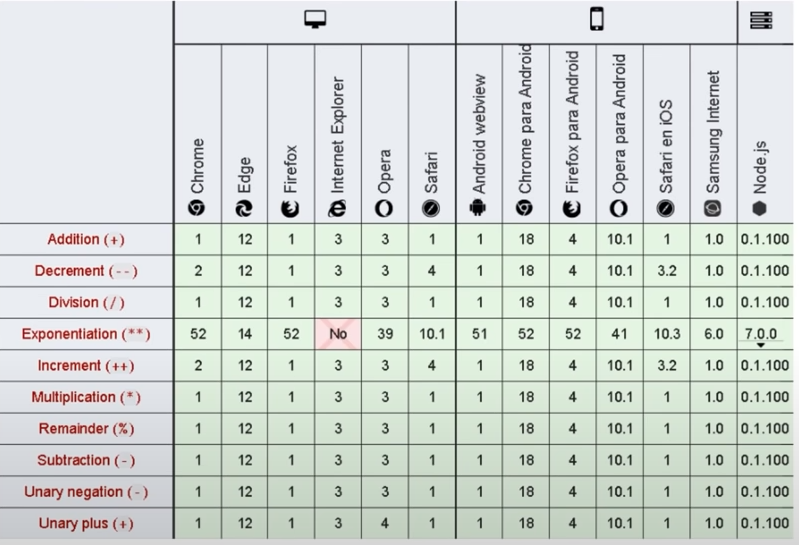
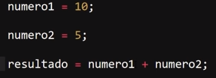
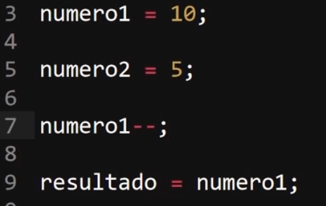
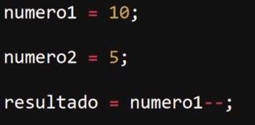
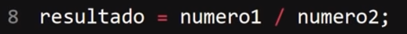
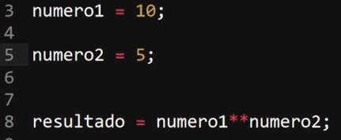
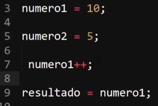
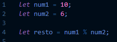
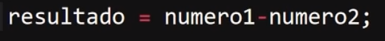
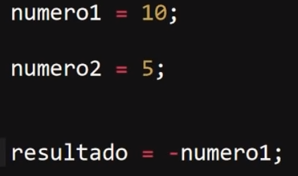

Operadores
Los operadores permiten manipular el valor de las variables, realizar operaciones matemáticas con sus valores y comparar diferentes variables. De esta forma, los operadores permiten a los programas realizar cálculos complejos y tomar decisiones lógicas en función de comparaciones y otros tipos de condiciones.
Operadores de Asignación
Los operadores de Asignación asignan un valor al operando de la izquierda basado en el valor del operando de la derecha, es decir son como una abreviatura de una operación comun, se trata de operadores que con su primer simbolo expresan la operación a realizar a la variable en la que se utilise, seguido de un igual que concatena el segundo operador, a continuación se pueden obcervar dos operaciones con exactamte el mismo significado:

De esta forma el uso de operadores de asignación simplifican el codigo asignando la opercaión a la varible a la que se le realizara, de es modo evitando tener que llamar a la varible y indicando que a esta se le debe realizar la opración como se hace en una declaración de operación común.
Los operadores de asignación disponibles en JavaScrip son:

Definición operaciones particulares
-
En esta secmento se definen todos aquelllos operadores de asignación con valores diferentes al de las operaciones matematicas basicas (suma, resta, multiplicación y divición).
-
Asignación de Resto
En aritmética, el resto o residuo de una división de dos números enteros es el número que se le ha de restar al dividendo para que sea igual a un determinado número de veces el divisor. En otras palabras el resto es la diferencia entre X numero de veces el dividendo y el divisor.
Por Ejemplo

El resultado de esta operación es 2, ya que el multiplo de 6 más cercano a 50 sin sobrepasarlo es 48, el resto de esta operacón es 2, ya que es la difernrecia entre el dividendo (50) y X numero de veces el divisor (6).
-
Asignación de Exponenciación
Se trata del resultado de la asignación de una potencia al valor que se encuantre en la varible.
Ejemplo

El resulado de esta operación es 100, ya que el valor en la varible es la base de la operación (10) y el numero asignado se convierte en su exponente (2) resultado en: 102, lo que es igual a 10 * 10 = 100.
-
Nota: El resto de operadores de asignación son realmete de uso muy puntual, y para llegar a usarlo es necesario profundizar mucho en JavaScrip por lo que no es necesario desenglosarlos en esta sección.
Operadores Aritmeticos
Los operadores Aritmeticos toman valores númericos ( ya sean literales o Variables) como sus operandos y retornan un valor númerico unico, es decir estos operadores toman valores numericos y los convierten para retirnar un valor.
Los Operadores Aritmeticos son los Siguientes:

Definición de los Operadores Aritmeticos
-
-
Suma
Se trata de del operador comun de suma, y su uso es común.

-
Decremento
Este operador tiene la función de restar uno(-1) del valor al que se le aplique
Ejemplo

El valor almacenado dentro de la variable "resultado" es 9, ya que "numero1" tiene un valor de 10 y le reducimos uno (-1) de su valor.
Este operador tiene una particularidad, y es que el decremento del valor ocurre luego de que este ya ha sido procesado, es decir:

En un aso como este el valor que se guarda dentro de la varible "resultado" es 10, ya que JavaScrip primero procesa el valor numerico (10) y luego procede a reducirlo en uno (-1), por ello lo que ocurre en este ejemplo es que primero se esta guardando el valor "10" dentro de la variable y luego se esta reduciendo su valor, resultando en que el valor dentro de la varibles sea "10" ya que no esta siendo alterado.
Para evitar estos errores enel uso del operador es necesario primero realizar la decrecón del valor y posteriormente manipular el valor, tal como se hace en el primer ejemplo del operador de decremento.
-
Divición
Este operador representa una operación de divición común por lo que su uso es el cotidiano

-
Exponenciación
Este operador requiere de dos valores ya que convierte el segundo valor en el exponente del primero de la siguiente forma:

Este ejemplo resulta en "100.000" ya que esta operación es igual a 105
-
Incremento
Este operador aumenta en uno (+1) el valor al que se le asigne, su funcionamiento es igual que el operador de decremento, incluyendo la particularidad de que primero se procesa el dato y luego se modifica su valor, con la unica diferencia de que este suma en uno(+1) al valor en vez de restarlo.

Por lo tanto en este ejemplo el valor guardado en la varible es 11, ya que se le esta sumando uno (+1) al valor de esta (10).
-
Resto
Este operador realiza la operación de resto entre dos numeros, (la cual ya se encuentra explicada en el operador de asiganción resto )

Por lo tanto el resultado de este ejemplo es 4.
-
Sustracción
Este operador indica una operación de resta común. por lo que no hay nada destaclable en su uso.

-
Negación Unaria
este operador invierte el signo del dato numerico en cuanestión, es decir lo convierte en su opuesto exacto.

Por lo tanto en este ejemplo el resultado es "-10" ya que se modifico el signo del valor convirtiendo en su opuesto,
Nota: este operador no es como el incremento o el decremento, ya que este se ejecuta antes de procesar el valor por lo que si es correcto emplearlo al guardar el dato en una varible.